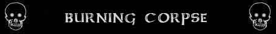

Immunità al Fuoco ed al Calore;
Abilità Speciali dei Non Morti; ;
Vulnerabilità dei Non Morti;

|
|
Climate/Terrain | Any |
| Frequency | Rare | |
| Organization | Solitario o Piccolo Gruppo | |
| Activity Cycle | Any | |
| Diet | Nessuna | |
| Intelligence | Non (0) | |
| Treasure | Nessuno | |
| Alignment | Neutrale | |
| No. Appearing | 1d10: (1-6) 1 (7-10) 1d3+2 | |
| Armor Class | 5 | |
| Movement | 9 | |
| Hit Dice | 5+5 | |
| Thac0 | 16 | |
| No. of Attacks | Artiglio o Arma / Morso | |
| Damage / Attacks | 1d6+1 (taglio) o Variabile +1 / 1d8+1 (taglio) | |
| Special Attacks | Aura di Calore Inferiore; | |
| Special Defenses | Corpo Bruciante; Immunità al Fuoco ed al Calore; Abilità Speciali dei Non Morti; ; |
|
| Special Weakness | Vulnerabilità Moderata al
Freddo; Vulnerabilità dei Non Morti; |
|
| Magic Resistance | Nessuna | |
| Senses | Sensi dei Non Morti | |
| Size | Medium (1,8 m. altezza) | |
| Morale | Fearless (20) | |
| XP value | 450 |
Descrizione
Il Burning Corpse appare come un corpo flagellato da gravissime e profonde ustioni tali da carbonizzarne abbondanti parti. Nel loro viso nero e consunto dalle fiamme spiccano come due gemme lucenti le sfere verde pallido dei loro occhi. La creatura, inoltre, emana continuamente fumo e dalle molteplici ferite aperte sul suo corpo fuoriescono costantemente scintille e piccole fiammelle.
Combat
Il Burning Corpse cerca di raggiungere la propria vittima in corpo a corpo e continua ad attaccare fino a che non viene distrutto.
AURA DI CALORE INFERIORE (Lesser Special Ability): Il corpo di questa creatura irradia costantemente intorno sé stessa un calore molto intenso. In termini di gioco, alla fine di ogni round di combattimento tutte le creature presenti in una qualsiasi posizione in corpo a corpo intorno alla creatura subiranno 1 danno da calore.
CORPO BRUCIANTE (Moderate Special Ability): Il corpo della creatura brucia costantemente dall'interno. Per tale motivo, ogni volta che la stessa viene ferita in corpo a corpo, pericolose fiammate e pezzi ustionanti fuoriescono dallo stesso. Ogni creatura che combatte in corpo a corpo con questo essere e lo ferisce ha una possibilità pari al 3% per danno inflitto di essere colpito dalle fiamme e subire 1d6 danni da intenso calore. Le creature che combattono con armi Large ottengono un bonus di -5% a questo tiro. Le creature che combattono con armi Polearm ottengono un bonus di -10% a questo tiro.
IMMUNITA' AL FUOCO ED AL CALORE (Typical Ability): Il corpo della creatura è totalmente immune ai danni da fuoco e da calore, sia di origine comune che magica.
VULNERABILITA' MODERATA AL FREDDO (Typical Weakness): Il corpo della creatura è particolarmente sensibile ai danni da freddo, per tale motivo la stessa subirà il 133% (per eccesso) di tutti i danni da freddo provocati nei suoi confronti. Inoltre la creatura riceverà un malus di -5% a tutti i tiri salvezza contro effetti prodotti utilizzando freddo gelo od acqua.
POTERI E VULNERABILITA' DEI NON MORTI : In quanto creature non morte questi esseri ottengono le seguenti caratteristiche tipiche dei non morti (link):
Habitat/Society
I Burning Corpse sono esseri non morti privi di intelletto al servizio dei loro padroni. Costoro agiscono solo in base agli ordini ricevuti. Non sono in grado di trarre conclusioni da soli e non prendono nessuna iniziativa. A causa di questa limitazione, le istruzioni che ricevono devono sempre essere semplici. Si tenga presente che, come tutti i non-morti, i Burning Corpse sono spinti da una permanente intolleranza all'energia positiva. Siccome gli esseri viventi sono catalizzatori di questa energia (le forme animali in particolare) tutti i non morti hanno una naturale tendenza a eliminare la vita in queste creature (alla morte l'energia positiva si dissolve). Per questo motivo i Burning Corpse, in quanto non morti senza intelligenza sono comunque molto aggressivi nei confronti degli esseri viventi che incontrano.
Ecology
Il Burning Corpse è una creatura non morta e come tale non inserita nell'ecologia del normale mondo di Arelia.
Mystical Resource Sourge
(Ossa) Quantità: 1, Presenza 33% - Scuola di Magia:
Necromancy
- Qualità della Risorsa: Common.
Mystical Resource Sourge
(Pelle Carbonizzata) Quantità: 1, Presenza 25% - Effetto Particolare:
Resistenza al Fuoco
- Qualità della Risorsa:
Uncommon.